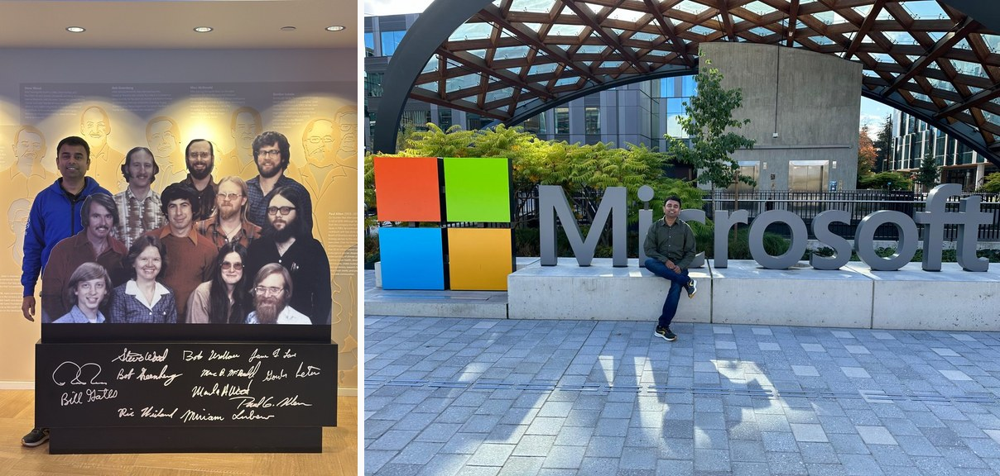
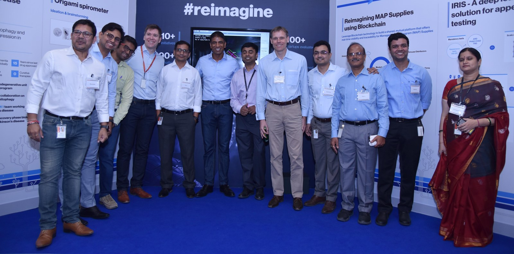

02 / Work & achievements
Complex problems.
Considered execution.
Selected professional contributions across AI products, enterprise collaboration, regulated technology, and data engineering.
Jan 2022 – present / Senior Product Manager
Microsoft

The challenge. Fragmented cloud hardware supply chain tools and engineering-dependent supplier onboarding made collaboration and API validation unnecessarily complex.
My contribution. Own the vision and roadmap for a unified collaboration platform, aligning four engineering teams and senior stakeholders around shared priorities, phased releases, and enterprise migration.
Human-centred by design. Used user interviews, user journey mapping, and UX design to shape the collaboration tool and improve its usability. Designed self-service onboarding and transaction-visibility journeys for 200+ business and engineering users, applying human-centred design principles to serve both technical and non-technical users.
AI within the workflow. Delivered a self-service agent for API testing using documentation and natural-language workflows in a simulated environment. Embedded AI into existing experiences rather than requiring users to change their journeys.
The outcome. The testing agent reduced manual effort by approximately 70%, reclaiming approximately 1,200 engineering hours annually. Foundational platform delivery helped the organisation complete 30% of its multi-year consolidation roadmap within the second year; wider consolidation remains underway.
Continuous improvement. Used prompt experimentation, evaluations, A/B testing, and human-in-the-loop annotation to improve LLM response quality, supported by telemetry on platform usage and model performance.
Nov 2017 – Jan 2022 / Associate Product Manager
Novartis

The challenge. Bring electronic Product Information from concept to a compliant production platform across a multi-party pharmaceutical ecosystem.
My contribution. Delivered a greenfield blockchain-based ePI platform, working with 17 pharmaceutical companies and regulatory bodies across four countries. Managed a six-member vendor engineering team, owned releases, and developed the roadmap, adoption strategy, and onboarding playbook.
The outcome. Took the platform from concept through EU rollout, delivering GxP-compliant releases with zero compliance violations and a repeatable framework for partner onboarding and future market expansion.
Jan 2013 – Nov 2017 / Application Developer Senior Analyst
Accenture
The challenge. Bring fragmented enterprise data into a unified ERP foundation, then turn central SAP ECC data into dependable business reporting.
My contribution. Owned data enrichment workflows and execution sequencing for migration from multiple SAP R/3 systems into a centralised, country-level SAP ECC system. Subsequently worked across requirements gathering, coding, ETL orchestration, reporting, and maintenance, building and maintaining 300+ enterprise data pipelines over my tenure.
End-to-end data engineering. Developed expertise across SAP modules, SQL, Informatica, SSIS for ETL, and SSRS for reporting, alongside schema management, data lakes, reporting layers, and reporting tools.
The outcome. Migration work helped the client lower costs and establish a unified ERP experience. Our reporting team brought hourly, daily, weekly, and monthly reports together in one place, with a focus on accurate data and dependable delivery.
Operational ownership. Drove monthly production releases and served as the directly responsible individual during pipeline failures, critical incidents, and outages.
Jul – Dec 2012 / Risk Intern
Amazon
Evaluated fraud and abuse across high-volume transaction operations, building an early grounding in structured analysis and operational judgment.